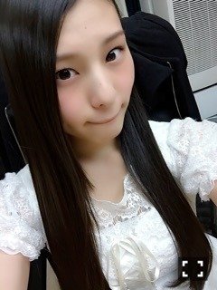
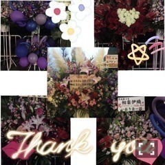
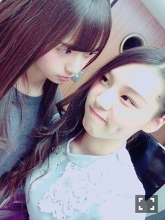
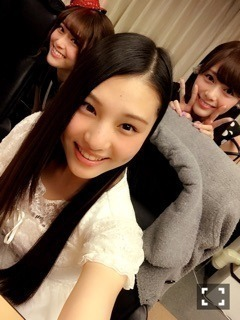

| 2015/12 23 Wed | これはみんなに自慢しなきゃ _(．．*)vol.57 |
みなさんこんばんはー！
さがらいおりです！

アンダーライブ2日間
Merry Xmas Show2日間
武道館ライブ終わりました！！！
私は武道館に立つのは初めてだったから
立てて良かったっていうのが1番の感想です♡
全員センター企画では
「転がった鐘を鳴らせ」で
センターをつとめました！！
走り回ってすごい楽しかった♪♪
真夏さんと飛鳥ちゃんから
「 いおりがセンターだよー！ が良かったよ♡」
って言ってもらえた(/ω＼*)
皆さんにも聞こえてたかな、？

お花もたくさん
送っていただいてありがとうございます♡
みなさんの気持ちが活力になる！！！

あ、あすかちゃん
それと私が着てる衣装
嫉妬の権利の衣装なんです♪♪
襟の羽みたいなのが
可愛くて、写真では水色っぽいけど
本当は紫色だから
それもお気に入り(*^^)v
らりんさーーーん(；；)
アンダーライブ最終日の
サイリウムが黄色一色になってるの
すごい感動しました
最後の最後に
ほっぺにちゅーしてもらえた♡
すごい信頼してる先輩だし
あの場で初めて聞いたから
本当にただただ悲しかったけど、
次の夢に向かって頑張って欲しいです！
卒業しちゃう前にご飯行きたい♪♪
それから紅白歌合戦！！
「君の名は希望」で
全員で出場することになりました！！
本当にいつも
ありがとうございますm(_ _)m
大晦日は紅白歌合戦観てね♪♪
~いおり庵~
おすすめのダイエット方は？
間食をしない！
あとゆっくりお風呂に入る！
あとー、
8時以降は食べないようにするよ！
サインなんで変えたの？
乃木坂入ってすぐに
「これっ！」って決めちゃったから
ずっと変えたかったの(｡> <｡)

みてみてー♡
1人で撮ってたら
ひょこってきて一緒に撮ってくれました♡
へへへヾ(＠⌒ー⌒＠)ノ
すごい嬉しいーヾ(＠⌒ー⌒＠)ノ
 ソニレコ！暇つぶしTV
ソニレコ！暇つぶしTV
少しだけど、
出てるのでお時間ある時に見てください♪♪
乃木坂ゴルフ倶楽部
楽天SHOWTIME
OVERTURE 発売中
琴子、花奈さん、ひめかさん、私で
撮影してきました！
UTB 発売中
2期生で
カワイイ組とキレイ組で別れて
撮っていただきました！
ホテルで撮ったんだよー♡
オフショットは次載せます＞＜
よろしくお願いしますm(_ _)m
i o r i .

コメント(254)
2015/12/23 18:18